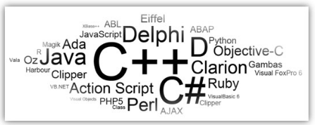
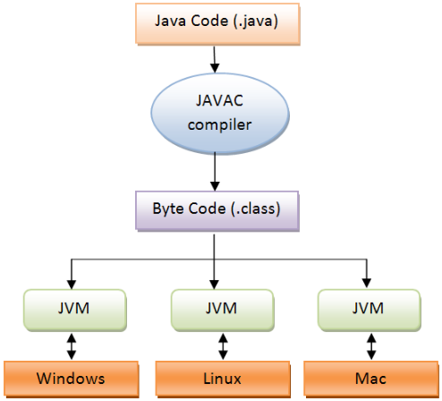
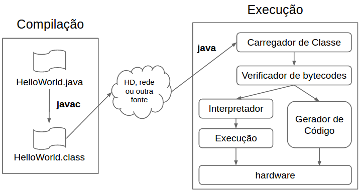

Showoff Menu
Close
Press ? for help.
All features are anonymous
Press ? for help.
All features are anonymous
Exercitar a Programação Orientada a Objetos utilizando as etapas do desenvolvimento de software orientado a objetos com UML.
Fonte: Plano de Ensino
Média = P1*0.2 +P2*0.2 +P3*0.4 + A*0.1 + PI*0.1
Média = P1*0.2 +P2*0.2 +P3*0.5 + A*0.1
| Aula | Tema | Aula | Tema |
|---|---|---|---|
| 1 | Java e POO | 10 | Acoplamento e Coesão |
| 2 | Herança | 11 | Coleções |
| 3 | Polimorfismo | 12 | Exercícios |
| 4 | Abstração | 13 | Prova P2 |
| 5 | Exercícios | 14 | Vinculação |
| 6 | Prova P1 | 15 | Tratamento de Erros |
| 7 | Associação | 16 | Exemplos |
| 8 | Interface | 17 | Semana PI |
| 9 | Interface | 18 | Prova Substitutiva |
O professor utilizará o Eclipse.
Será utilizado a linguagem de programação Java.
teste
O que o computador é capaz de fazer?
O que faz um computador ser capaz de efetuar tarefas são os Programas de Computadores.
Programas de Computadores são conjuntos de comandos e regras que um programador deve conhecer para poder manipular os recursos de um computador.
O programa diz ao computador o que fazer:
Programas de Computadores são escritos usando Linguagens de Programação, que definem regras específicas e bem determinadas para que um conjunto de operadores e comandos possam ser utilizados.

O conteúdo dos programas, escrito por programadores de forma que outros programadores possam ler e entendê-los, também é chamado de código ou Código-Fonte.
Para que o código seja executado por um computador, ele deve ser traduzido da linguagem de programação (alto nível) para uma linguagem que possa ser compreendida pelo computador (baixo nível) através de um compilador.
Dicionário Michaelis (http://michaelis.uol.com.br/)
Wikipedia
Determina a visão que o programador possui sobre a estruturação e execução do programa.
É a maneira como pensamos e como iremos fazer nossos programas.
Um paradigma de programação fornece e determina a visão que o programador possui sobre a estruturação e execução do programa. Por exemplo, em programação orientada a objetos, programadores podem abstrair um programa como uma coleção de objetos que interagem entre si, enquanto em programação funcional os programadores abstraem o programa como uma sequência de funções executadas de modo empilhado.
entre outros (https://pt.wikipedia.org/wiki/Paradigma_de_programação)
ACM (Association for Computing Machinery) http://www.acm.uiuc.edu/signet/JHSI/cr.D.3.2.html
Procedural Programas são executados por chamadas sucessivas e procedimentos separados. Exemplos: Fortran e Basic. Orientação a Objetos Suportam Interação entre Objetos. Exemplo: C++, Java, Python e Ruby.
Um programa especifíca uma relação ou uma função. Funcional Não possuem atribuições ou dados mutáveis. Um programa é uma função, que é composto de outras funções. Exemplo: List e ML. Programação Lógica Um programa implementa uma relação. Exemplo: Prolog.
colocar imagem e referência
Fracamente Tipadas Tipo da variável muda dinamicamente conforme situação. Exemplo: PHP
Fortemente Tipada Uma vez atribuído, o tipo da variável não é alterado. Exemplo: Java
Dinamicamente Tipada Tipo da variável é definido em tempo de execução. Exemplo: Perl
Estaticamente Tipada Tipo da variável é definido em tempo de compilação. Exemplo: Java
Os paradigmas de programação podem ser classificados quanto ao grau de abstração.
Baixo Nível
Médio Nível
Alto Nível
Símbolos são uma representação direta do código de máquina que será gerado.
Exemplo de Linguagens: Assembler
Exemplo de Código Assembler
section .text
global _start
_start:
mov edx,len
mov ecx,msg
mov ebx,1
mov eax,4
int 0x80
mov eax,1
int 0x80
section .data
msg db 'Hello, world!',0xa
len equ $ - msgA Programação Orientada a Objetos é um paradigma de Programação de Computadores que utiliza o conceito de Objetos como elementos centrais para representar e processar dados usados nos programas.
Os conceitos de POO surgiram no final da década de 1960.
Primeiras Ideias de Orientação a Objetos Linguagem Simula-68 em 1968
Linguagem Simula-68 introduziu os conceitos de objetos e mensagens para a construção de programas.
Programação Orientada a Objetos Criador do termo Alan Kay (Linguagem Smalltalk nos anos 70) Desenvolvida no laboratório de pesquisa da Xerox, EUA.
A popularização ocorreu durante os anos 1980 e 1990 com as linguagens C++ e Java.
Assunto controverso nos Anos 80. Resolvido em 87 - Artigo OOPSLA - Peter Wegner Para uma linguagem ser Orientada a Objetos ela precisa: Ser baseada em Objetos Ser baseaada em Classes Permitir Herança Outras Opiniões: enlaçe dinâmico, tardio (late binding) Coleta automática de lixo Herança múltipla Agregação
incluir imagem
colocar imagem ou a lista das linguagens
https://pt.wikipedia.org/wiki/Categoria:Linguagens_de_programação_orientadas_a_objetos
No Paradigma de Orientação a Objetos, um programa é visto como um conjunto de objetos que se comunicam através de mensagens.
Um programa OO possui objetos que colaboram entre si, executando tarefas específicas em busca de um objetivo comum.
A POO está sedimentada sobre 4 Pilares.
colocar imagem
Mecanismo pelo qual uma classe pode derivar de outra classe, aproveitando seus comportamentos e estados.
colocar imagem
Os animais são divididos em uma hierárquia de categorias, sendo que a mais inferior herda a classificação das categorias superiores.
Princípio pelo qual classes derivadas de uma mesma superclasse podem invocar método que têm a mesma identificação mas comportamento distintos
colocar imagem
Todos animais emitem algum som, mas cada animal possui sua forma de emitir som.
Consiste na separação de aspectos internos e externos de um objeto.
colocar imagem
Não é necessário saber como funciona internamente um motor para utilizá-lo.
É a habilidade de concentrar nos aspectos essenciais de um contexto qualquer, ignorando características menos importantes.
Quando um médico torna-se especialista em algum órgão do nosso corpo, ele abstrai sem desconsiderar as influências dos outros órgãos e foca apenas sua atenção nesse órgão.
Operação intelectual que consiste em isolar, por exemplo um conceito, um elemento à exclusão de outros, do qual então se faz a abstração. Fonte: wikipedia
Trata-se da capacidade de abstrair a complexidade de um sistema e se concentrar em apenas partes desse sistema. ignorar aspectos não relevantes. capacidade de focalizar o essencial e ignorar detalhes não relacionados com o objetivo estabelecido.
Escrever um modelo para representar uma carro.
imagem...
Escrever um modelo para representar um carro de brinquedo que será vendido na loja.
imagem...
Escrever um modelo para representar um carro que será utilizado em uma concessionária.
imagem...
São utilizados para representar entidades do mundo real ou computacional.
São usados para representar aqueles elementos e abstrações que fazem parte da solução do programa que está sendo desenvolvido.
Imagens de exemplo slide 12
Muitas entidades ou abstrações podem ser representadas como objetos em um programa de computador.
Por exemplo, pessoas e carros podem ser vistos como objetos.
Imagens de exemplo slide 13
Objetos possuem características pelas quais os identificamos e finalidades para as quais os utilizamos. Em OO: Características = Atributos
Imagens de exemplo slide 14
Objetos possuem comportamentos associados. Em OO: Comportamentos = Métodos
Imagens de exemplo slide 15
Objetos possuem: * Características (atributos) * Comportamentos (métodos)
De forma geral, pensamos e organizamos o mundo segundo a nossa visão das características e finalidades da coisas. Ou seja, pensamos Orientado a Objetos.
É comum criar grupos de objetos com base nas suas características e comportamentos.
Universo de objetos Carro. Todos possuem mesmas características e compotamentos.
Características * tipo * cor * número de portas
Comportamentos * acelerar * frear * ligar * desligar
A modelagem de um conjunto de objetos que possuem características e comportamentos em comum é realizada usando o conceito de Classe.
Cada Classe funciona como um molde para a criação de um Objeto.
Os Objetos são vistos como representações concretas (instâncias) da Classe.
Imagens slide 20
Uma Classe define o comportamento de seus objetos através de métodos e os estados possíveis destes objetos através de atributos.
Cada Classe contém dados, bem como o conjunto de métodos que manipulam seus dados.
A instância de uma classe é chamada de objeto.
Estruturado rotinas e funções de fornecedores espalhadas por todo sistema como em contas a pagar, contas a receber e cadastro.
OO objetos de fornecedores funções agrupadas apenas no objeto
Estruturado Na hipótese de alterar algum dado, função ou propriedade, todo sistema deverá ser analisado para identificar o que foi afetado
OO propriedades, funções e rotinas do objeto fornecedor estão todas em um único objeto, encapsulados, facilitando as futuras alterações.
Estruturado É possível porém, às vezes, é necessário utilizar o “copiar e colar”
OO com a utilização de relacionamentos entre objetos a reutilização de código é muito facilitada
Representa um conjunto de objetos com características afins. Uma classe define o comportamento dos objetos em seus métodos e quais estados ele é capaz de manter com seus atributos.
Objeto ou instâncias de uma classe. É capaz de armazenar estados através de seus atributos e reagir a mensagens enviadas a ele, assim como se relacionar e enviar mensagens a outros objetos.
São características de um objeto. Trata-se da estrutura de dados que vai representar a classe. Por sua vez, os atributos possuem valores. O conjunto de valores dos atributos de um determinado objeto é chamado de estado.
Definem as habilidades dos objetos. Um método em uma classe é apenas uma definição. A ação só ocorre quando o método é invocado através do objeto.
É uma chamada a um objeto para invocar um de seus métodos, ativando um comportamento descrito por sua classe.
Mecanismo pelo qual uma classe (sub-classe) pode estender outra classe (super-classe), aproveitando seus comportamentos (métodos) e variáveis possíveis (atributos).
Mecanismo pelo qual um objeto utiliza os recursos de outro.
Consiste na separação de aspectos internos e externos de um objeto. Este mecanismo é utilizado amplamente para impedir o acesso direto ao estado de um objetos (seus atributos), disponibilizando externamente os métodos que acessam ou alteram seus estados.
É a habilidade de concentrar nos aspectos essenciais de um contexto qualquer, ignorando características menos importantes.
Princípio pelo qual duas ou mais classes derivadas de uma mesma superclasse podem invocar método que têm a mesma identificação (assinatura) mas comportamento distintos, especializados para cada classe.
É um "contrato", relacionado a comportamento, estabelecido entre a classe e o mundo externo (quem a utiliza).
São referências para organização lógica de classes e interfaces.
Robusta
Independente de arquitetura de Hardware
Em outras linguagens, desalocar área de memória é responsabilidde do programador http://javabook.compuware.com/content/memory/how-garbage-collection-works.aspx


| abstract | boolean | break | byte | case | catch |
| char | class | const | continue | default | do |
| double | else | extends | final | finally | float |
| for | goto | if | implements | import | instanceof |
| int | interface | long | native | new | package |
| private | protected | public | return | short | static |
| strictfp | super | switch | synchronized | this | throw |
| throws | transient | try | void | volatile | while |
| assert |
Total de 49 palavras reservadas
| abstract | boolean | break | byte | case | catch |
| char | class | const | continue | default | do |
| double | else | extends | final | finally | float |
| for | goto | if | implements | import | instanceof |
| int | interface | long | native | new | package |
| private | protected | public | return | short | static |
| strictfp | super | switch | synchronized | this | throw |
| throws | transient | try | void | volatile | while |
| assert |
42 palavras reservadas utilizadas no curso.
7 palavras reservadas não vistas no curso.
IntelliJ - https://www.jetbrains.com/idea/
Oracle JDeveloper - http://www.oracle.com/technetwork/developer-tools/jdev/overview/index.html
https://en.wikipedia.org/wiki/Integrated_development_environment
O método main é um método estático especial, usado como ponto de partida de um programa Java.
@@Java
public static void main (String [] args) {
// implementação
}
O array de strings é a lista de argumentos da linha de comando;
Pode-se declarar métodos main em qualquer classe.
Para imprimir textos na saída padrão em Java, chamamos o métodos: void System.out.println (String texto); Imprime um texto e pula uma linha. void System.out.print (String texto); Imprime um texto, mas não pula linha. Saída Padrão: Tela
@@Java
System.out.println (“Hello World!”);
@@Java
System.out.println (“Hello World!”);
@@Java
public class HelloWorld {
public static void main (String[ ] args) {
System.out.println(“Hello World!”);
}
}
Compilação do arquivo HelloWorld.java Programa para compilação: javac
javac HelloWorld.java
Faz com que seja compilado automaticamente. É gerado o arquivo
HelloWorld.class
Execução do arquivo HelloWorld.class Programa para execução: java
java HelloWorld
Faz com que o programa seja executado. O método main da classe é executado.
Quando desenvolvemos em alguma linguagem e, mais especificamente em Java, devemos levar em consideração as convenções de nomenclatura para deixar nosso código o mais legível e documentável possível.
Cada linguagem de programação possui suas convenções de nomenclatura.
Google Java Style Guide
O nome deve ser: claro (sem ambiquidade) simples (composto com mínimo de palavras) único (referir-se a um único conceito).
Teoricamente, é possível nomear uma classe com qualquer nome suportado pela linguagem. É importante seguir algumas regras adotadas, caso contrário, outros profissionais ao ver o seu código podem considerá-lo amador sem nem querer saber o quão bem ele foi programado.
Por convenção, toda classe deve começar cum uma letra maiúscula e não deve conter letras não ASCII. Caso o nome de uma classe seja composto por mais de uma palavra, a primeira letra de cada palavra deve ser maiúscula. O nome da classe deve ser exatamente o mesmo nome de seu arquivo fonte (.java)
Pessoa ImpostoDeRenda Conta AgenciaDeEmprego
x y resultado valorDeX valorDeY
Os atributos finais (constantes) deve ser escritos em letras maiúsculas. Usamos underline ( _ ) para separar nomes compostos.
public final int TAMANHO = 10;
public final boolean PARAR_DE_EXECUTAR = true;
public final String VERMELHO = "Vermelho";